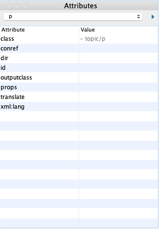

Creating the simple_dita framework
Having told Oxygen where to find the frameworks and their associated files, you can proceed to create the first framework. Because this is a simplified version of DITA 1.3, I've called my first framework simple_dita.
For more information on creating custom frameworks in Oxygen, see OxygenXML Help: Create Custom Frameworks.
-
If the Preferences dialog is not already open, go to Options>Preferences>Document Type Association.
-
Click DITA and then Extend.
-
In the Document type dialog that opens:
-
Give the new framework a Name. I used SIMPLE DITA.
-
Set Priority to Highest.
-
Set Storage to External, and click the folder icon to navigate to the simple_dita folder within your customer_frameworks folder.
-
On the Classpath tab, select the ${baseFramework}/resources row and click the wrench icon.
Change the content in the Directory field to ${frameworkDir}/resources/ and click OK. In this case, the ${frameworkDir} variable contains the path to the custom_frameworks/simple_dita folder.
-
On the Templates tab, select all the rows and click the X icon to delete them all. Click the + icon, and enter ${frameworkDir}/templates/ in the Directory field and click OK.
-
On the Author tab, edit the Menu, Contextual Menu, Toolbar, and Content Completion sub-tabs, to add or remove any icons not relevant to your framework.
-
Click OK, and then OK again close the Preferences dialog.
-
Once completed, your Elements and Attributes windows in Oxygen look like the examples below:
 |
 |